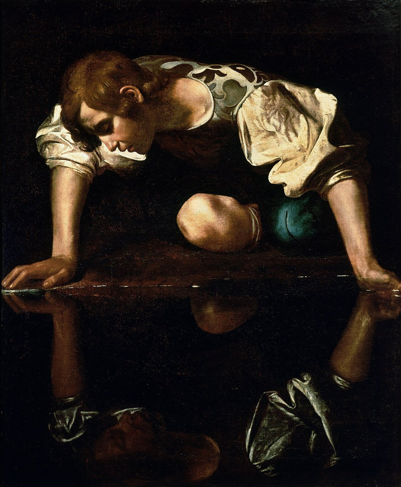
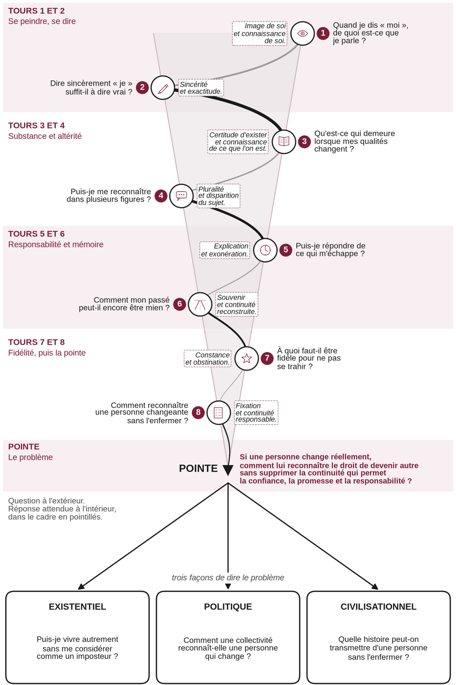
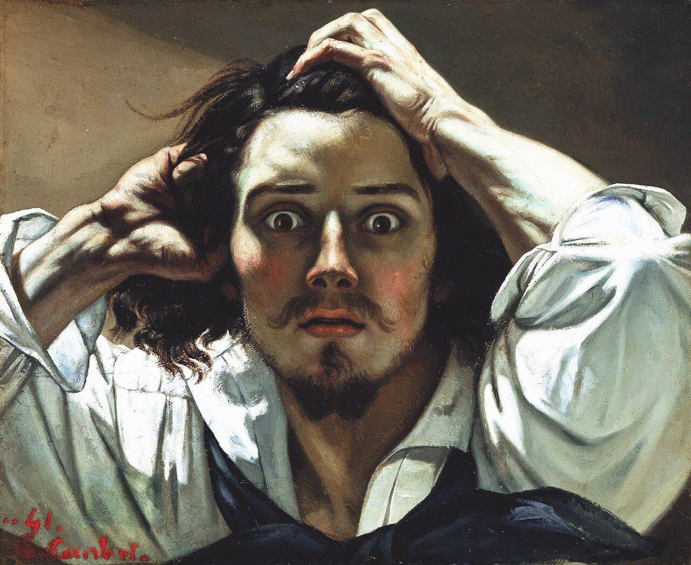
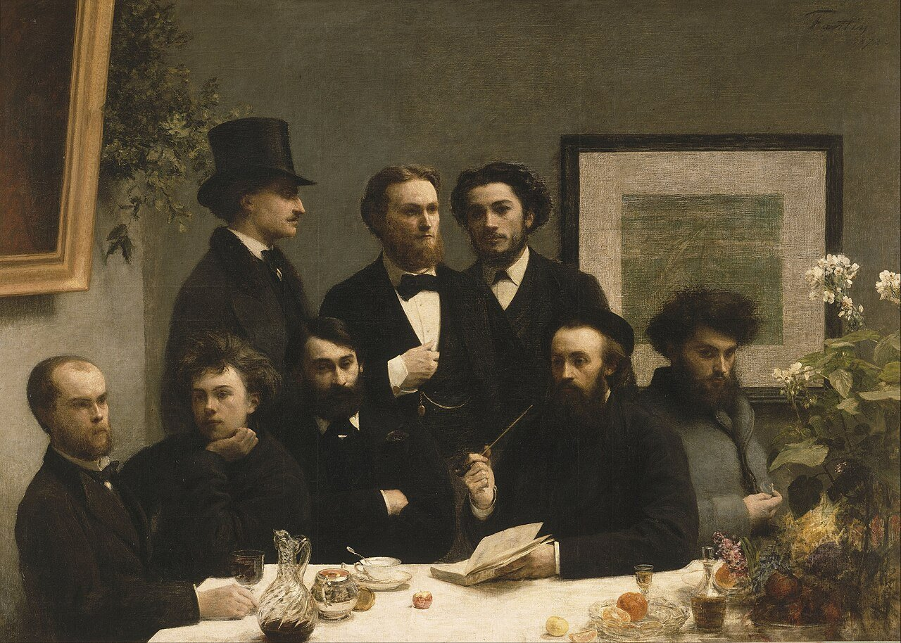

Les métamorphoses du moi. Une séquence de spécialité Humanités, littérature et philosophie : huit séances, la spirale de Gorse, un tableau des approches du moi, un devoir en quatre heures.
Sans JavaScript, toutes les séances sont sur cette page, l'une après l'autre. Les onglets ci-dessus mènent à chacune.
Introduction
Spécialité Humanités, littérature et philosophie, Terminale du lycée général et technologique. Programme du BO spécial n° 8 du 25 juillet 2019 : semestre 1 « La recherche de soi », entrée « Les métamorphoses du moi ». Note de service du 11 septembre 2026, BO spécial n° 4 du 17 septembre 2026, applicable à compter de la session 2027.

Le Caravage (attribué), Narcisse, vers 1597-1599, huile sur toile, Galerie nationale d'art ancien, Rome (Palais Barberini), domaine public. L'attribution reste discutée.
Objectif de la séquence
Objectif. Lire, en terminale HLP, le problème des métamorphoses du moi : le moi peut-il changer sans se perdre, et peut-on se connaître si l'on ne cesse de changer ?
La période de référence va du romantisme au XXe siècle. Montaigne, Descartes, Pascal, Locke, Hume et Rousseau forment ici une généalogie des problèmes que les œuvres des XIXe et XXe siècles déplacent. Ils ne remplacent pas cette période.
Objectifs, par les cinq activités langagières
Compréhension de l'écrit. Lire l'intelligence d'un texte : lexique, syntaxe, énonciation, images, rythme, implicite, et ce que la forme fait penser. Lire des extraits entiers lorsqu'ils sont du domaine public.
Compréhension de l'oral. Écouter un camarade jusqu'au bout, puis reformuler son argument avant de répondre.
Expression écrite. Tenir une trace à chaque séance, puis une interprétation littéraire et un essai philosophique, d'ampleur comparable, sur deux copies distinctes.
Expression orale en continu. Prendre la parole à chaque séance, avec une citation ou un détail d'image. Présenter un exposé court à la séance 7.
Interaction orale. Débattre à la séance 5 sur la responsabilité de ce qui échappe. Questionner une hypothèse sans quitter le texte.
Chaque séance pose une question d'interprétation et une question de réflexion. À deux enseignants, les lectures se répondent sans se confondre. Si une seule personne assure la séance, les deux questions demeurent visibles. Aucun exercice ne demande une confidence.
Le corpus
Montaigne, « Au lecteur » et, pour l'épreuve, « Du repentir »Essais, textes du domaine public, Wikisource, orthographe modernisée.
Rousseau, incipit des ConfessionsDomaine public. Entraînement à l'interprétation littéraire, séance 2.
Descartes, Pascal, HumeSéance 3, entraînement à l'essai philosophique. Pour Hume, traduction de travail courte, la traduction française usuelle pouvant demeurer protégée.
Nerval, « El Desdichado » ; Rimbaud, lettre à Paul Demeny du 15 mai 1871Domaine public. Séance 4 et évaluation de mi-parcours.
Stevenson, Freud, Nietzsche ; Proust, LockeSéances 5 et 6. Les textes protégés n'apparaissent que sous forme de courtes citations, avec référence ; le reste est expliqué en mots propres.
Œuvres d'art du domaine publicCourbet, Friedrich, Narcisse (attribution discutée), Montaigne (portrait présumé, musée Condé), Rembrandt, Dürer, Ramsay, Hals (copie d'après), Fantin-Latour, Carjat. Voir les crédits en pied de page.
Sartre et ErnauxSur la liste de lecture : titres et raisons seulement, aucun extrait.
La spirale de Gorse
Huit tours se resserrent jusqu'à une pointe, non jusqu'à un centre. Cette pointe s'ouvre ensuite en trois voies : existentielle, politique et civilisationnelle. Le nom exact de la méthode est conservé. Méthode de la spirale de Gorse conçue par Madame Carole Paoli Pompougnac.

Schéma de la spirale de Gorse : huit tours se resserrent jusqu'à une pointe, qui s'ouvre en trois voies. Méthode de la spirale de Gorse conçue par Madame Carole Paoli Pompougnac.
Chaque séance ordinaire dure 55 minutes et est conduite sur 52, avec un point d'arrêt vers la minute 44 et une sortie de secours de huit minutes. La séance 4 prépare l'évaluation de mi-parcours. La séance 8 est le devoir de quatre heures. Les textes du domaine public sont donnés entiers dans le livret, avec une lecture guidée en étapes courtes.
Séance 1. Se peindre soi-même
Tour 1. Quand je dis « moi », de quoi est-ce que je parle ?
Aujourd'hui : distinguer voir, représenter et connaître. Une image de moi me montre-t-elle vraiment ?
Avant de regarder. Que nous apprend un portrait, et que nous cache-t-il ?

Gustave Courbet, Le Désespéré, vers 1843-1845, collection particulière, domaine public.
Devant Le Désespéré, écrire deux observations vérifiables, puis une interprétation introduite par « On peut supposer que… ».
Comparer Friedrich et Narcisse : que voyons-nous, que nous est-il refusé ?
Lire Montaigne, « Au lecteur ». La construction « C'est moi que je peins » promet-elle une transparence totale ?
Le diagnostic de début de séquence clôt l'heure. Point d'arrêt vers la minute 44. Devoir : Rembrandt et Dürer, huit lignes sur une manière d'être regardé.
Séance 2. « Moi seul » : se distinguer pour se faire lire
Tour 2. Dire sincèrement « je » suffit-il à dire vrai ?
Entraînement à l'interprétation littéraire, à partir de l'incipit des Confessions de Rousseau. Le texte entier du passage de travail est dans le livret.
Avant de lire. Si quelqu'un dit « moi seul », que promet-il, et que demande-t-il aux autres ?
Repérer un détail qui résiste à une première lecture de sincérité.
Expliquer ce que la forme fait penser, pas seulement ce que le texte affirme.
Rédiger une amorce d'interprétation : « Le texte paraît d'abord affirmer que… Pourtant le mot… »
Trace écrite et devoir dans le livret. Point d'arrêt vers la minute 44.
Séance 3. Le moi existe-t-il comme une chose ?
Tour 3. Qu'est-ce qui demeure lorsque mes qualités changent ?
Entraînement à l'essai philosophique, avec Descartes, Pascal et Hume. Distinguer la certitude d'exister et la connaissance de ce que l'on est.
Avant de lire. Si toutes mes qualités changeaient, que resterait-il encore à appeler « moi » ?
Pour chaque texte, une affirmation, un détail qui résiste, une limite.
Ne pas conclure trop vite : « donc le moi n'existe pas » n'est pas une lecture de Hume.
Écrire une introduction d'essai qui pose une difficulté, non un catalogue d'auteurs.
Point d'arrêt vers la minute 44. Le livret donne les passages et les amorces.
Séance 4. « Je est un autre »
Tour 4. Puis-je me reconnaître dans plusieurs figures ?
Nerval, « El Desdichado », et Rimbaud, lettre à Paul Demeny du 15 mai 1871. Les deux textes sont dans le livret, entiers pour le poème, et pour le passage de travail de la lettre.
Avant de lire. Qu'arrive-t-il à la grammaire, et à l'idée de sujet, lorsque l'on écrit « Je est » plutôt que « Je suis » ?

Henri Fantin-Latour, Un coin de table, 1872, musée d'Orsay, domaine public. Rimbaud est assis, près de Verlaine ; il n'est pas debout à gauche.
Dans Nerval, suivre les titres, les pertes et les images contradictoires du « je ».
Chez Rimbaud, lire la discordance « Je est » comme un travail de la langue, non comme une formule à réciter.
L'évaluation de mi-parcours suit cette séance. La grille est dans le livret et dans la fiche de correction.
Séance 5. Le double et l'inconscient
Tour 5. Puis-je répondre de ce qui m'échappe ?
Débat sur la responsabilité, à partir de Stevenson, de Freud et de Nietzsche. Les textes protégés n'apparaissent que sous forme de courtes citations, avec référence. Todorov sert d'outil pour l'hésitation fantastique dans Stevenson, sans reproduction de ses pages.
Avant le débat. Expliquer ce qui m'échappe, est-ce déjà m'en exonérer ?
Distinguer explication et exonération, avec un passage précis.
Débattre en s'appuyant sur un texte : reformuler l'argument entendu avant de répondre.
Écrire la trace : une maîtrise limitée ne résout pas, à elle seule, la question de la responsabilité.
Point d'arrêt vers la minute 44. Devoir dans le livret.
Séance 6. Mémoire et identité
Tour 6. Comment mon passé peut-il encore être mien ?
Proust et Locke : retrouver n'est pas conserver intact. Une sensation peut rendre présent un monde ancien ; une continuité de conscience n'est pas une preuve extérieure.
Avant de lire. Un souvenir qui revient est-il le passé lui-même, ou un récit du passé ?
Distinguer sensation présente, souvenir et récit du souvenir.
Ne pas confondre narrateur et auteur.
Écriture réflexive : un exemple choisi ou fictif, sans confidence exigée.
Point d'arrêt vers la minute 44.
Séance 7. Atelier oral et écrit
Tour 7. À quoi faut-il être fidèle pour ne pas se trahir ?
Devenir autre sans être assigné. Un exposé court, puis un atelier d'écriture, pour préparer le devoir de quatre heures sans apprendre un essai tout fait.
Avant de parler. La fidélité, est-ce la constance des traits, ou le maintien d'engagements que l'on peut encore discuter ?
Exposé : une distinction, une citation, une limite. Pas de catalogue d'auteurs.
Écrire une progression plutôt qu'une liste.
Préparer, sans la réciter, une entrée possible dans l'essai.
Point d'arrêt vers la minute 44. Le devoir de la séance 8 se prépare ici, il ne se rédige pas encore.
Séance 8. Écrire le changement sans effacer la personne
Tour 8, pointe de la spirale de Gorse. Comment reconnaître une personne changeante sans l'enfermer ni tout effacer ?
Devoir de quatre heures, sur le modèle de l'épreuve. Un texte, deux questions, chacune /10, sur deux copies distinctes. Ici, l'interprétation est littéraire et l'essai philosophique. D'autres sujets peuvent inverser les orientations.
« Je ne peins pas l'être. Je peins le passage. »
Montaigne, Essais, livre III, chapitre 2, « Du repentir », 1588. Texte du domaine public, Wikisource, orthographe modernisée. L'extrait complet, le lexique et les deux questions sont dans le livret.
Question 1. Comment Montaigne fait-il de l'instabilité du moi la matière même de son écriture ?
Question 2. Changer, est-ce cesser d'être soi ?
Une séance de retour des copies suit, avec réécriture. Le devoir après la séance 8 est une autocorrection, non une nouvelle dissertation.
Téléchargements
Quatre documents, chacun en PDF, Word et LibreOffice. Vous pouvez utiliser et adapter ces documents en citant leur autrice, sans usage commercial, et en partageant vos versions dans les mêmes conditions. CC BY-NC-SA 4.0.
conçu par Madame Carole Paoli Pompougnac, mis en page par Grok. Couverture : Le Caravage (attribué), Narcisse, vers 1597-1599, Galerie nationale d'art ancien, Rome (Palais Barberini), domaine public ; l'attribution reste discutée. Autres œuvres du domaine public citées dans le livret. Schéma de la spirale de Gorse : illustration originale. Méthode de la spirale de Gorse conçue par Madame Carole Paoli Pompougnac.